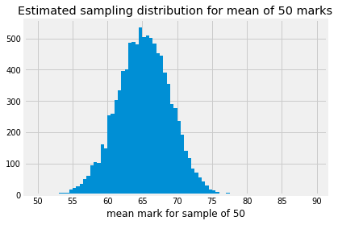

9.3 Back to Havana
In the problem for the education minister we had a sample of fast-track-marked exams from 2019, and we found that the mean mark was 54.51. We wondered what we could say about the eventual mean of the marks for all 8000 or so students.
After a bit of development, we found, in the reverse probability with bars page, that we could use some probability calculations to draw conclusions about the state of the world, from some result. In that page, we calculated the probability of the state of the world (a box we have been given) from a result (drawing a red ball).
Now we want to draw a conclusion about the state of the world (the eventual mean of all the 2019 exams) from a result (the mean of the fast-marked sample of 50 2019 exams).
We will call the 50 fast-track-marked exams the sample. When the 2019 marking is finished, we will have around 8000 marks. We will call this the population. We want to draw conclusions about the population from the sample. In particular we want to draw conclusions about the population mean from the sample mean.
Let us start with the following problem:
Problem 1: What is the probability that we will observe a sample mean of around 54.51, given that the population mean is 62.25.
Referring back to our box and ball problem, this probability is the equivalent of the probability of getting a red ball from a given box. Given a state of the world (the population mean) what the is the probability of the result (the sample mean). Once we have probabilities like these, we will be able to use the logic you have already seen to get the reverse probability - how likely was any particular state of the world (population mean), given the result (the sample mean).
Returning to our mathematics exam problem: how will we calculate the probability of a sample mean of around 54.51, given a population mean of 62.25?
As usual, this is a problem of sampling. If the mean of the population is 62.25, and we draw a sample of 50 marks, then the mean of the sample will be vary somewhat depending on the sample. That is, the sample mean will be 62.25 plus or minus a bit. As usual, we need to quantify what we mean by “a bit”.
For example, remember the population of 2018 marks, that do have a mean of around 62.25.
import numpy as np
import pandas as pd
import matplotlib.pyplot as plt
%matplotlib inline
plt.style.use('fivethirtyeight')
havana_2018 = pd.read_csv('havana_math_2018.csv')
marks_2018 = havana_2018['mark'].dropna()
marks_2018.mean()
65.25609088420477
To get the sampling distribution of the mean of a sample of 50, we would have to calculate the mean for every possible sample of 50 values from the 8000 or so marks. As usual, we make do with an estimate of the sampling distribution by taking many thousands of samples.
# Take 10000 samples, calculate their means.
n_iters = 10000
sample_means = np.zeros(n_iters)
for i in np.arange(n_iters):
sample = np.random.choice(marks_2018, size=50, replace=False)
sample_means[i] = np.mean(sample)
sample_means[:5]
array([68.28, 60.9 , 68.08, 68.82, 70. ])
The next cell has a histogram of the sampling distribution. Notice that we
have asked plt.hist to break the histogram into bins with edges
np.arange(50, 80, 0.5). This means that each bin covers a range of 0.5 units
— so the first bin in the histogram gives the counts of all sample means that
were between 50 and 50.5 (excluding 50.5), the second bin covers 50.5 up to
(not including) 51, and so on.
bin_edges = np.arange(50, 80, 0.5)
plt.hist(sample_means, bins=bin_edges)
plt.xlabel('mean mark for sample of 50')
plt.title('Estimated sampling distribution for mean of 50 marks');

We can use plt.hist to give us the counts for each of these bins, by storing the values that plt.hist returns, like this:
# Store the values that plt.hist returns.
hist_vals = plt.hist(sample_means, bins=bin_edges)
# Counts per bin is the first returned value.
counts = hist_vals[0]
counts
array([ 0., 0., 0., 1., 4., 1., 2., 7., 13., 18., 15.,
18., 41., 49., 46., 67., 102., 125., 128., 164., 209., 272.,
285., 299., 349., 423., 465., 496., 534., 499., 507., 515., 523.,
502., 471., 424., 397., 376., 323., 255., 238., 196., 138., 137.,
97., 73., 64., 42., 33., 24., 10., 5., 7., 5., 1.,
3., 1., 1., 0.])

As we saw in the page on using minimize, we can get this value a little more
neatly by unpacking the return values from plt.hist, like this:
# Store the values that plt.hist returns.
# We will only use the first of these.
counts, edges, patches = plt.hist(sample_means, bins=bin_edges)
# Counts per bin (again):
counts
array([ 0., 0., 0., 1., 4., 1., 2., 7., 13., 18., 15.,
18., 41., 49., 46., 67., 102., 125., 128., 164., 209., 272.,
285., 299., 349., 423., 465., 496., 534., 499., 507., 515., 523.,
502., 471., 424., 397., 376., 323., 255., 238., 196., 138., 137.,
97., 73., 64., 42., 33., 24., 10., 5., 7., 5., 1.,
3., 1., 1., 0.])
These are the counts for how many of the 10000 samples we took had a mean between the bin edges. For example, the left (lower) edge of the bin at index 20 is:
bin_edges[20]
60.0
This the bin counting all the sample mean values between 60 and 60.5. The counts in that that bin are:
counts[20]
209.0
This is the count of the 10000 sample means from our estimated sampling distribution, that were from 60 up to, but not including, 60.5.
By dividing the counts by the number of samples, we get the proportion of samples that fall in this range:
proportions = counts / 10000
proportions
array([0. , 0. , 0. , 0.0001, 0.0004, 0.0001, 0.0002, 0.0007,
0.0013, 0.0018, 0.0015, 0.0018, 0.0041, 0.0049, 0.0046, 0.0067,
0.0102, 0.0125, 0.0128, 0.0164, 0.0209, 0.0272, 0.0285, 0.0299,
0.0349, 0.0423, 0.0465, 0.0496, 0.0534, 0.0499, 0.0507, 0.0515,
0.0523, 0.0502, 0.0471, 0.0424, 0.0397, 0.0376, 0.0323, 0.0255,
0.0238, 0.0196, 0.0138, 0.0137, 0.0097, 0.0073, 0.0064, 0.0042,
0.0033, 0.0024, 0.001 , 0.0005, 0.0007, 0.0005, 0.0001, 0.0003,
0.0001, 0.0001, 0. ])
For example, here is the proportion of sample means that fell between 60 and 60.5:
proportions[20]
0.0209
In other words, given this estimated sampling distribution, for this world with a mean of 62.25, the probability of any one sample mean being between 60 and 60.5 is:
proportions[20]
0.0209
Now we are in a position to answer our intermediate question:
Problem 1: What is the probability that we will observe a sample mean of around 54.51, given that the population mean is 62.25.
One difficulty with this question is that we do not know what the sampling distribution would be for this hypothetical 2019 full set of marks, where the population mean is 62.25. For the moment, we will assume that the sampling distribution is exactly the same as it was in 2018; this is the sampling distribution we have already been using.
We find the bin corresponding to the sample mean of 54.51; this is the bin with the left (lower) edge of 54.5. It turns out this is the bin at index 9.
bin_54p5 = np.where(bin_edges == 54.5)
bin_54p5
(array([9]),)
Look back at where and argmin for this trick of using np.where to find the
index.
We get the proportion at that index, to give the probability that we will see a sample mean between 54.5 and 55:
p_around_54p5 = proportions[bin_54p5]
p_around_54p5
array([0.0018])